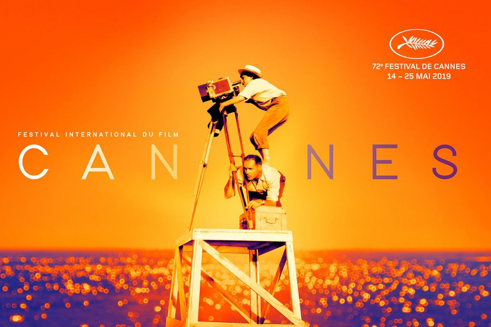
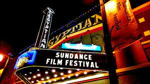
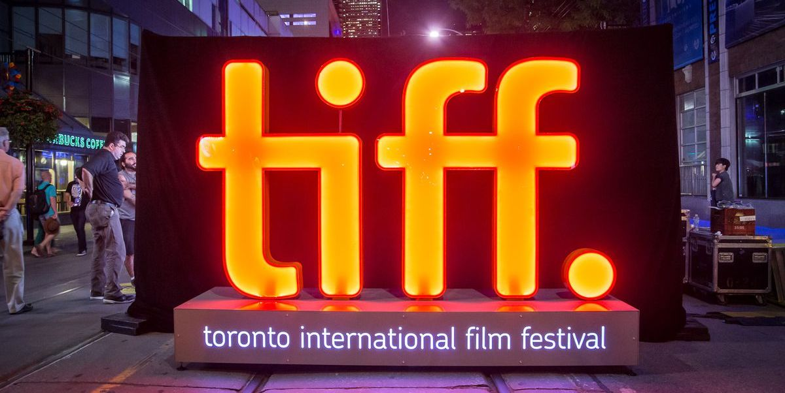
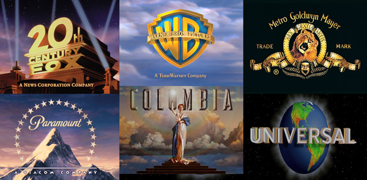

Actividades
Bienvenido a la sección de actividades, donde exploraremos una variedad de experiencias emocionantes y enriquecedoras relacionadas con el mundo del cine. Aquí, te sumergirás en la magia
de la gran pantalla, desde la comodidad de una sala de cine hasta la emoción de los festivales de cine más prestigiosos del mundo.
Ir al cine
Ir al cine es una actividad clásica que nunca pasa de moda. Ya sea que prefieras las últimas superproducciones de Hollywood, las obras maestras del cine independiente o los clásicos
atemporales, hay algo para todos en la gran pantalla. Además, el cine ofrece una experiencia inmersiva que no se puede replicar en casa, con sonido envolvente y pantallas gigantes que
te transportan a mundos diferentes.

Festivales de cine
Los festivales de cine son una oportunidad única para sumergirse en la cultura cinematográfica. Desde Cannes hasta Sundance, estos eventos reúnen a cineastas, actores y amantes del cine
de todo el mundo para celebrar la creatividad y la innovación en el cine. Aquí están algunos de los festivales de cine más importantes:
-

Festival de Cine de Cannes
Es un festival de cine internacional que se celebra anualmente en Cannes, Francia. La 76ª edición se celebrará del 14 al 25 de mayo de 2024.
-

Festival de Cine de Sundance
Es un festival cinematográfico internacional que se celebra anualmente las dos últimas semanas de enero en Park City, cerca de Salt Lake City, Utah, Estados Unidos.
-
Festival de Cine de Berlín
Es un prestigioso festival de cine internacional que se celebra en la ciudad de Berlín, Alemania. Fue fundado en Berlín Oeste en 1951 y se celebra anualmente en febrero desde 1978.
-
Festival de Cine de Venecia
Es un festival de clase A que se encuentra entre los más reconocidos del mundo a nivel competitivo. Se celebra en el mes de septiembre de cada año.
-

Festival Internacional de Cine de Toronto
Es un festival de cine que se celebra anualmente en Toronto, Canadá. El festival arranca el martes siguiente al Labor Day (primer lunes de septiembre) y dura diez días.
-
Festival Internacional de Cine de Guadalajara
Es uno de los eventos de cine latinoamericano, español y portugués más importantes del mundo. Se celebra anualmente, en el mes de marzo, en la ciudad de Guadalajara, México.
-
Festival de Cine de Londres
Organizado por el British Film Institute, es el mayor festival de cine del Reino Unido. Se celebra anualmente en la ciudad de Londres a mediados de octubre. Tiene una duración de dos semanas.
-
Festival Internacional de Cine de Edimburgo
Es un festival de cine que se celebra anualmente en Edimburgo, Escocia. La próxima edición se llevará a cabo del 15 al 21 de agosto de 2024.
-

Festival Internacional de Cine de San Sebastián
Es el evento cinematográfico más importante del Reino Unido y ha celebrado su 66 aniversario en la edición de 2022. Desde sus orígenes ha sido un "festival de festivales", y proyecta una selección de los mejores títulos de otros certámenes.
Visitas a estudios de cine
Los estudios de cine son el corazón de la producción cinematográfica. Con visitas guiadas a estudios famosos, puedes ver de cerca cómo se hacen tus películas favoritas y aprender sobre
el proceso creativo detrás de ellas. Estas visitas te permiten ver los decorados, los vestuarios y los equipos de producción, y a veces incluso puedes tener la suerte de ver una
película en producción.

Conferencias y paneles
Las conferencias y paneles sobre cine ofrecen una visión única del mundo del cine. Desde charlas con directores y actores hasta debates sobre temas candentes en la industria, estas
experiencias te permiten sumergirte en la cultura cinematográfica de una manera nueva y emocionante. Estos eventos son una gran oportunidad para aprender más sobre el arte y el negocio
del cine, y a menudo ofrecen la oportunidad de hacer preguntas e interactuar con los profesionales de la industria.
Proyecciones al aire libre
Las proyecciones al aire libre son una forma mágica de disfrutar del cine. Ya sea en un parque, en la playa o en un patio trasero, ver una película bajo las estrellas es una experiencia
inolvidable. Estos eventos a menudo tienen un ambiente festivo, con comida y bebida disponibles, y a veces incluso música en vivo antes de la proyección.
Maratón de películas
Un maratón de películas es la oportunidad perfecta para sumergirse en una serie de películas relacionadas. Ya sea que elijas ver todas las películas de una franquicia o explorar un
género específico, pasar un día viendo películas es una forma divertida de disfrutar del cine. Además, un maratón de películas puede ser una gran manera de descubrir nuevas películas
que de otro modo podrías haber pasado por alto.
Premiaciones
Las premiaciones de cine son una celebración de lo mejor de la industria cinematográfica. Desde los premios de la Academia hasta los Globos de Oro, estas ceremonias honran a los
cineastas y actores más talentosos del mundo. Aquí están algunos de las premiaciones de cine más importantes:
-
Premios de la academia
Los Premios de la Academia, conocidos popularmente como Premios Óscar, son galardones concedidos anualmente por la Academia de las Artes y las Ciencias Cinematográficas de Estados Unidos. Estos premios reconocen la excelencia en logros cinematográficos en diversas categorías como Mejor Película, Mejor Director, Mejor Actor, entre otros.
-
Globos de Oro
Los Globos de Oro son premios otorgados por la Asociación de Prensa Extranjera de Hollywood, que reconocen la excelencia en cine y televisión, tanto nacional como extranjera. Los premios se entregan en una ceremonia anual que se celebra en enero.
-
Premios BAFTA
Los Premios de la Academia Británica de las Artes Cinematográficas y de la Televisión, conocidos como BAFTA, son premios que se otorgan anualmente por la Academia Británica de las Artes Cinematográficas y de la Televisión. Los premios se entregan en una ceremonia anual que se celebra en febrero.
-
Premios Goya
Los Premios Goya son los galardones otorgados anualmente por la Academia de las Artes y las Ciencias Cinematográficas de España. Estos premios reconocen la excelencia en logros cinematográficos en diversas categorías como Mejor Película, Mejor Director, Mejor Actor, entre otros.
-
Premios Ariel
Los Premios Ariel son los premios cinematográficos más importantes de México. Son otorgados anualmente por la Academia Mexicana de Artes y Ciencias Cinematográficas a las mejores producciones cinematográficas del país.
-
Premios César
Los Premios César son los premios cinematográficos más importantes de Francia. Son otorgados anualmente por la Academia de las Artes y Técnicas del Cine de Francia a las mejores producciones cinematográficas del país.